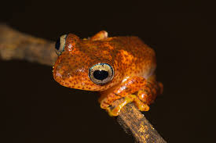

The Firefrog is a mythical or exotic amphibian typically characterized by glowing, ember-like skin. In folklore, these creatures thrive near volcanoes, possessing innate resistance to heat. Some legends claim they breathe tiny sparks or secrete flammable oils, making them vibrant, dangerous symbols of the elemental power of fire.